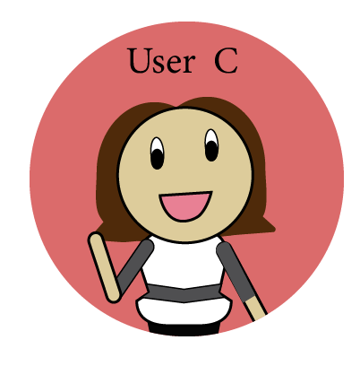
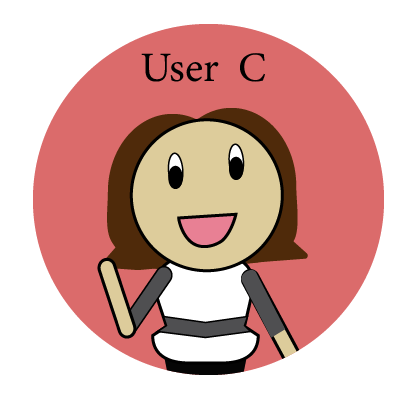
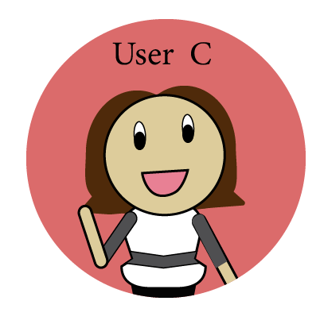

Over the course of three weeks, my team and I interviewed approximately 25 individuals. Our research revealed a few pain points that a new feature might help eliminate. We redesigned the platform so that users could exercise this feature (individualizing user’s recommendations) to help Amazon recommend more relatable products in order to increase sales. Although individualizing was the main goal, in our Discovery phase we worked on the idea of minimizing the amount of space it took to display information and decided to follow both directions.
Team Lead: Kailyn Brush
Group Members: Yeojin Brown, Danny Garrison, and Christin Villanueva
Discover
While the brief was fairly open-ended, my team and I were interested in the overall problems faced in using Amazon's Desktop site and Amazon Prime. All of the team members have experienced trying to find the cheapest, highest quality product that best reduced the customer’s identified pain points. Our first round of interviews set out to discover how other people interact with Amazon in their daily lives. We came up with our interview questions based on a general overview of the direction we thought we wanted to head in. Based on that we had a few assumptions that people wanted less clutter, a more minimized menu, possibly a gift search option, as well as some more features we were playing with. Through the interviews we learned that a lot of these were possibilities however more research into Amazon proved that most of them already existed they were just impossible to find/use.
Survey Results
More than 70% of our interviewees answered that they start on Amazon with a product already in mind and the search bar is their first click. They also indicated that a lot of the time they use reviews as their only means of quality checking before purchasing an item. In the next focus group, we homed in on this behavior. We also looked into the other aspects of Amazon we were still debating on including (gift-recommendations and deal-notifications).
SWOT Analysis
Attempts to research how to implement a gift-recommendation feature or a deal-notification system led to the discovery that Amazon already has these features incorporated. After some testing to determine how many people knew about these functions, we determined that Amazon had too many features hidden in places most users didn’t know to look.
In order to keep to the time frame, we separated the discovery results into four categories of interest we felt that with a little more research could become full projects. We then did more interviewing and surveying around these categories:
Streamlining overcrowded pages
Price/Deal notifications
Individually Customized Home Page
Filtering- change location and hierarchy
Define
The team discovered multiple pain points for users and the next steps were to determine the hierarchy between them, decide which point to focus on, and how to go about solving the chosen problem.
Problem Areas
Minimalism: simplifying and changing hierarchy
Amazon has a lot going for it. Millions of items, that ship to millions of people, across multiple platforms. They have hundreds of features and several options when it comes to searching for that perfect item and filtering through those results. The need for simplification was obvious, but what information did users want to see and what was the best way to convey it?
Customization of Home Page: a personal approach
People love personalized things. Why should product recommendations be any different? Not only would personalizing recommendations benefit the user, it would also benefit Amazon. By increasing interest in related products, Amazon might experience more sales and higher customer interaction.
Price/Deal Notifications: is cheaper always better?
However, because of the great deals and prices Amazon offers, it was easy to imagine scenarios in which a user might subscribe to just one. This suggests the need for a better tool to notify users of the best deals and prices across all of the user’s interests and products.
Character Profiles
To match our interviews/survey results, we created two character profiles (Chris Kroese and Jessica Flores) before continuing with Chris Kroese who we believed more accurately fit the user we were targeting.
Our research and chosen target user, led us to the following problem statement:
Feature Benefit Matrix
Once we had a clear goal for the end product of our chosen problem, we created the feature benefit matrix to determine the hierarchy of which features should be included in the redesign based of the time constraints as well as how beneficial the features are to the users and the company.
Develop
Having defined the problem, we moved into developing the solution.
The Process:
Journey Map
We extracted steps from a user journey in which our persona would need a tool to help him decide the best product to purchase and used those steps to build a user flow. Then we translated each step in this flow into sketches which we incorporated into our storyboard.
Storyboard
Based off of the User Journey steps we created the following storyboard:
We went through three iterations and two user testing sessions before reaching our final designs. Below are some components and their evolution, with notes concerning feedback from our testing sessions.
For the A&B testing we used the paper wireframes we had created and made an Invision prototype for users to test. They were very candid about their concerns: a distaste for the reviews and product description layout and a general dislike of the onboarding process led to a complete redesign of both. Several users also made it clear that the icons were a little hard to understand which led to a change of design for those as well.

"I actually go through the negative reviews, not the positive ones. But that's really the first thing I look at."
"I actually like the different icons (wishlist, and add to cart icons). It's pretty slick looking!"
"I generally prefer very minimal [menus]. I have no idea why...It just seems natural."
High-Res Wireframes
We settled on the same color scheme for two reasons. First, Amazon’s brand is already well established with these colors. Second, they complement and contrast very well with other colors. We wanted the colors to blend in with the environment, not detract from it.
There is no one solution to any problem, just as there is never just one solution. People and sites continue to evolve and change. The following is what I would do if I were to continue to work on this project:
Moving Forward with this project
The project's limited time frame meant that our group did not have as much time to incorporate as much of the user testing as we had hoped for. Also there is always room for more user testing to ensure this product is the best design. Moving Forward, I would focus more attention on unifying desktop with the mobile and tablet version.


 
